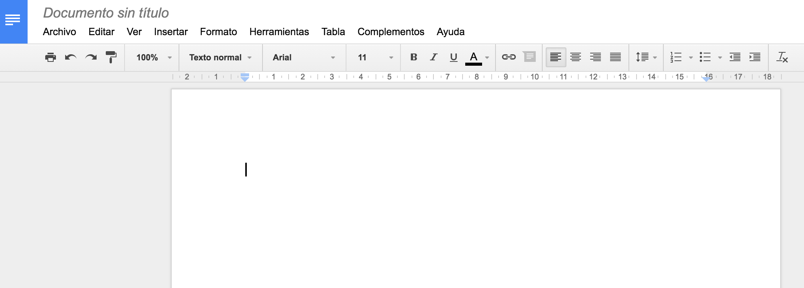
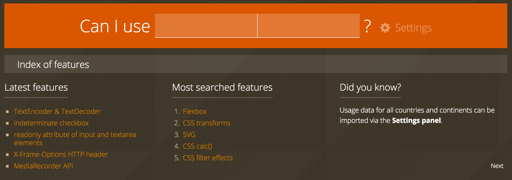
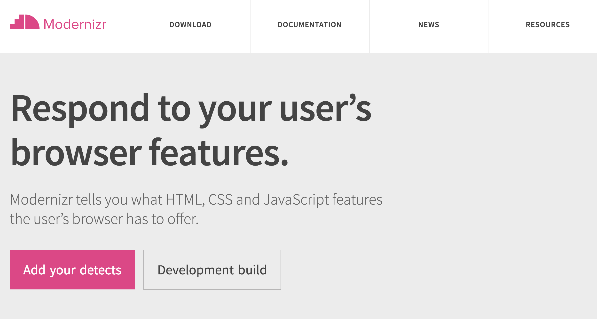

Desarrollo web orientado a API's y Microservicios
Un enfoque moderno
Clase 1
Diego Acuña Rozas
Ing. Civil en Informática - UTFSM
diego.acuna@mailbox.org
Clase de hoy
- Sobre mi
- Motivación del curso
- Concepto de aplicación web
- Temario de las clases
- Comentarios
Sobre mi
- Diego Acuña R.
- Ingeniero Civil en Informática, UTFSM (ingreso 2008)
- Magister en Ciencias de la Informática, UTFSM (ingreso 2014)
- Áreas de interés:
- Desarrollo de software: web, mobile, técnicas de estimación, testing.
- Análisis de datos: machine learning, series de tiempo. Aplicaciones financieras, aplicaciones orientadas a análisis de texto, NLP.
Motivación del curso
-
Exponer tendencias actuales en desarrollo web
de manera práctica!


- Generar debate en torno al desarrollo web actual
- Enseñar herramientas que les pueden ser de utilidad en su vida profesional
Aplicación Web
¿Qué es?
¿Es una aplicación web?

¿Es una aplicación web?
Los navegadores modernos
Existen nuevas funcionalidades en los navegadores actuales que antes solo estaban disponibles al desarrollar aplicaciones de escritorio.
Ahora sí podemos hablar de "aplicaciones" web
Ya no es solo una palabra que vende
Los navegadores modernos están diseñados para utilizar estas nuevas funcionalidades. Tiene sentido que comencemos a darle más trabajo a los navegadores.
Navegadores web modernos


Uso de 71.4%
Uso de 16.9%
Uso de 1.2%
En total cerca de un 90% del mercado!
*Estadísticas obtenidas desde http://www.w3schools.com/browsers/browsers_stats.asp
Navegadores web "casi" modernos

Uso de 3.6%
Uso de 5.7%
Si vamos a usar los recursos de los navegadores vale la pena saber que navegadores soportarán las nuevas herramientas que aplicaremos
Can I Use it?
¿Qué hacemos con los navegadores que no están soportados?
- Hace algunos años nos habríamos preocupado. Era posible encontrar una gran cantidad de hacks para Internet Explorer y de trucos para que los navegadores se comportaran de manera similar.
- Hoy en día, no importa tanto. Google Chrome es el navegador con mayor penetración del mercado y es el con mejor soporte para las nuevas herramientas de la web.
- ¿y el resto?...
Modernizr
En conjunto con los distintos polyfills disponibles podemos desarrollar una experiencia uniforme para la web.
Volviendo a lo nuestro
- Queremos utilizar al máximo los recursos del navegador => darle trabajo al cliente
- ¿Cómo funcionan los sistemas cliente-servidor tradicionales?
- Los servidores deben ser utilizados por lo que son buenos: "servir" contenido.
El servidor y las API's REST
- Protocolo cliente/servidor stateless
- Operaciones definidas: GET, POST, PUT, DELETE
- Podemos especificar el formato. Tradicionalmente: JSON o XML
¿Muy abstracto? Veamos un ejemplo
Sistema en rails para manejar usuarios
Servidor:
class UsersController < ApplicationController
def show
@user = User.find(params[:id])
end
end
Cliente (puede ser javascript) o algún cliente REST. Ejecutamos una llamada a /api/users
{
"id": 151,
"name": "Diego A.",
"email": "diego.acuna@mailbox.org",
"password": "*****"
}
¿De qué nos sirve ese trozo de json?
- Es lo que más importa! son los datos de nuestra aplicación.
- El resto son tareas que el navegador puede perfectamente realizar.
- Javascript adquiere gran relevancia en esta idea.
- Si lo llevamos al extremo: Single Page App.
En el caso del servidor
- Ahora solo se encarga de procesar y entregar datos.
- Nos podemos preocupar de optimizar este proceso.
- Arquitecturas orientadas a microservicios.
- Testing, Continuous Integration
- Deployment, ¿Docker?
Ya tenemos un panorama general. Veamos el temario del curso en detalle.
Clase 2 y 3
Nos vamos a enfocar en el servidor. BACKEND
- Rails
- Stack MEAN (Mongodb, ExpressJS, AngularJS, Node.JS)
- Programación funcional
- Scala y Reactive Apps
Clase 4
Test Driven Development
- La idea es aprender a mejorar nuestro nivel de desarrollo de aplicaciones.
- Como reducir los errores al desarrollar.
- TDD es un nuevo estilo de desarrollo, hay que aprender y acostumbrarse a utilizarlo.
- Vamos a ver ejemplos y trataremos de construir una mini-aplicación utilizando TDD. Probablemente utilizando rails.
- Bonus: Es útil en entrevistas laborales!
Clase 5
Proyecto de la asignatura
- El 40% de la nota de la asignatura corresponde a un proyecto que deberán desarrollar durante el transcurso de la asignatura,
- Utilizaremos esta clase para ver avances del proyecto, definir límites, etc.
Clases 6 y 7
Nos enfocamos en el cliente: Frontend
- Single Page Apps
- AngularJs
- Single Page Apps 2da. parte
- React
Clase 8
Seguridad en API's: Oauth 2.0 y OpenID
- En mi opinión, la seguridad de una aplicación es la parte aburrida.
- Oauth 2.0 y OpenID son protocolos de seguridad para API's. No son aburridos.
- Hay detalles muy interesantes en su implementación y en su historia. Vale la pena saber sobre estos protocolos.
¿Qué haremos?
Vamos a integrar estos protocolos de seguridad en su proyecto de la asignatura.
Clase 9
Deployment de aplicaciones: Docker y Kubernetes
- Vamos a aprender a hacer un deployment eficiente de nuestros microservicios y API's.
- Si da el tiempo, veremos algunos temas relacionados con integración continua.
Clase 10
Presentación del proyecto final
Evaluación de la asignatura
60% asistencia + 40% proyecto =